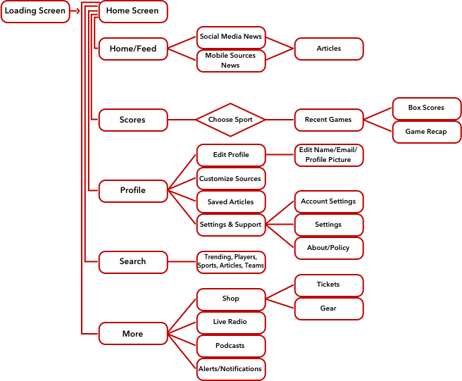

Scoreboard was created for users to have instant access to sports with a native app for both iOS and Android phones. Without having to download any apps from the store, Scoreboard allows users to stay up to date with the latest news about their favorite leagues, teams, players, etc.
The Problem
There are a number of apps for users to download if they want to gain access to the latest sports news and scores. However, there are no apps that are immediately available for use on the Apple or Android mobile devices. They have a calculator, weather, podcasts and even global news. What about the sports lovers?
The Solution
I have created an app called, Scoreboard. This will give the user instant access to sports on their mobile devices. They will be allowed to turn on the notifications for their favorites leagues, teams and players. Scoreboard will keep up with the latest scores, news and highlights. As a sports fan, the user will not miss out on any major sports events and outcomes.
Ideation
User Flow

The user flow was my first opportunity to establish the basis of what I wanted to include into the app. I was able to plan out what my users would want in a sports app. This also helped me gauge how quickly they would be able to get to their desired locations and accomplish their goals.
Wireframes
Digital Sketches: iOS
Digital Sketches: Material

Creating the sketches for the app is the first step of visual representation for what I wanted to create for my user’s interaction with the app. I designed options for both iOS and Material.
Low Fidelity Wireframes: iOS
Low Fidelity Wireframes: Material
My low fidelity wireframes set the foundation of what my final design will be. I took the ideas from my sketches and processed the design and icons to get a clear understanding before adding images, color and final typography.
Final Screens: iOS
Final Screens: Material
Prototyping
Once I finalized the style from my wireframes, I developed the finishing touches and created prototypes for each device which I had users test!